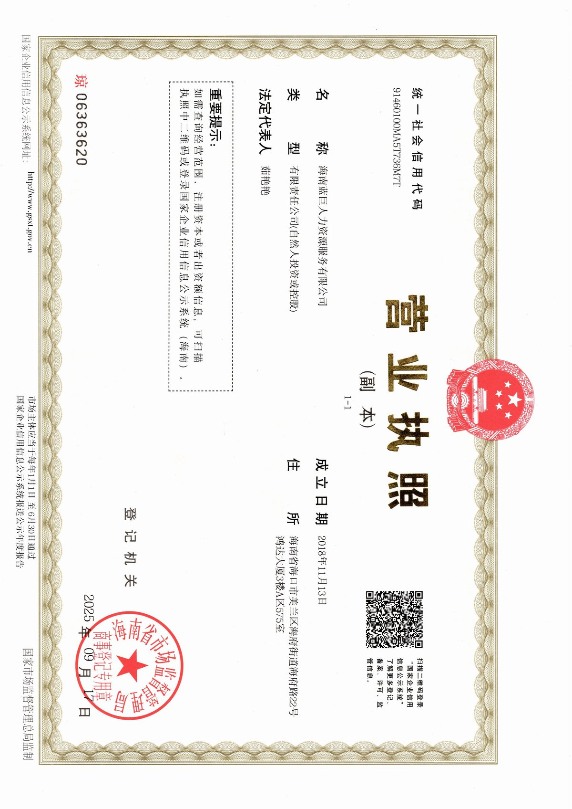
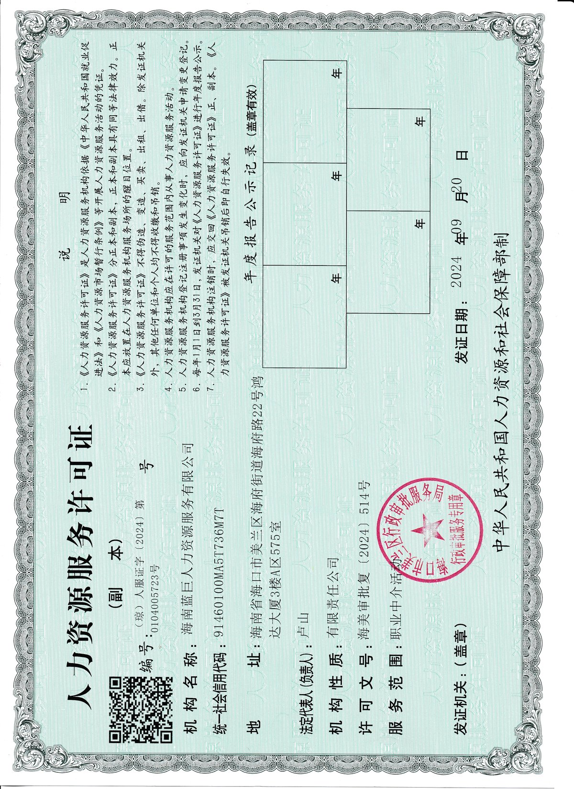

ABOUT US
海南蓝巨人力资源服务有限公司成立于海南省海口市，是一家经政府批准设立、持有《人力资源服务许可证》的专业人力资源服务机构。公司专注于就业驿站运营、灵活用工服务、劳务派遣、职业培训等一站式人力资源解决方案，深耕海南文昌，服务覆盖龙楼、潭牛、抱罗、东路、公坡等多个乡镇。
公司自2023年起运营就业驿站项目，先后承接文昌市多个乡镇就业驿站运营服务，为当地居民提供就业信息发布、求职登记、职业指导、技能培训推荐等公共就业服务。凭借专业的运营能力和扎实的服务品质，公司已成为文昌市就业驿站运营的重要力量。
STATION OVERVIEW
2023年3月开业，服务文昌航天城周边居民就业需求，是蓝巨人力首个就业驿站运营项目，持续为当地劳动者提供就业服务。
2023年6月开业，覆盖潭牛及周边乡镇就业服务，聚焦农业产业用工需求，为果农、花农等提供灵活用工对接。
2026年1月开业，服务东路镇及周边区域就业需求，是蓝巨人力新增运营站点之一。
2026年1月开业，服务公坡镇及周边区域就业需求，是蓝巨人力新增运营站点之一。
2026年1月开业，服务抱罗镇及周边区域就业需求，是蓝巨人力新增运营站点之一。
📊 详细服务数据持续统计中，量化分析完成后将及时更新。
CERTIFICATIONS


OUR CULTURE
搭建企业与人才的桥梁，让每一位劳动者都能找到适合自己的工作岗位，助力乡村振兴。
成为海南最具影响力的就业驿站运营服务商，打造覆盖乡镇的公共就业服务体系。
专业、诚信、务实、创新。以专业服务赢得信任，以务实态度服务基层，以创新精神推动发展。
用心服务每一位劳动者，用情连接每一家用人单位。让就业有温度，让服务有力度。
BUSINESS SCOPE
承接政府就业驿站项目，提供就业信息发布、求职登记、职业指导、技能培训推荐等一站式公共就业服务
人才招聘、劳务派遣、人事代理、人才测评等专业人力资源解决方案
联合旗下培训学校，开展多工种职业技能培训与职业资格认证服务
政府活动、企业团建、大型赛事、文化节庆等活动的策划与执行
OPERATION STATIONS
文昌市龙楼镇就业服务窗口，服务航天城周边居民就业需求
文昌市潭牛镇就业服务站点，覆盖潭牛及周边乡镇就业服务
文昌市东路镇就业服务站点，2026年新增运营
文昌市公坡镇就业服务站点，2026年新增运营
文昌市抱罗镇就业服务站点，2026年新增运营
MEDIA COVERAGE
潭牛站为凤梨基地组织9名灵活就业工人，日薪150元，通过精准匹配用工需求，有效促进了乡村灵活就业发展。
阅读全文 →潭牛站为100多亩荔枝园组织20余名采摘工点对点输送，有效缓解了果农采摘用工短缺问题。
阅读全文 →潭牛站为满足企路村莲花种植基地的用工需求，多次"点对点"输送灵活用工人员前往200亩水果莲种植基地务工。
阅读全文 →6月8日，随着文昌市4家就业驿站同时揭牌运营，海南就业驿站达到201家。蓝巨人力作为运营服务商之一参与其中。
阅读全文 →GALLERY
CONTACT US
海口市美兰区海府路22号鸿达大厦